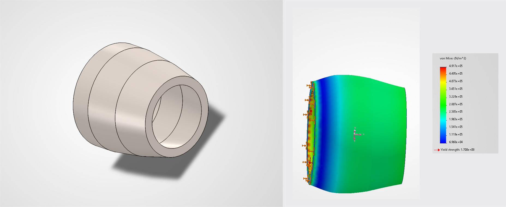
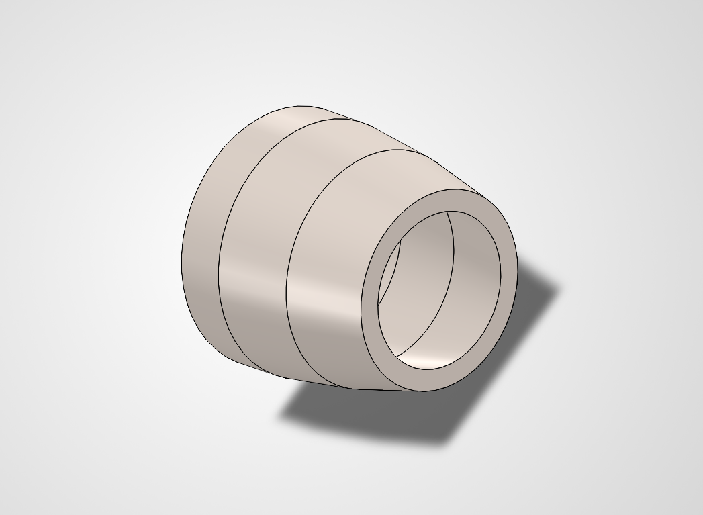

Penn Jet Propulsion Nozzle Design Challenge
An internal design challenge to CAD a nozzle within a fixed set of constraints and a materials budget - finishing top 3 while using roughly a third of the available budget.

Overview
As part of an internal nozzle design challenge with Penn Jet Propulsion, I had to design a nozzle in CAD that met a set of engineering constraints while staying within a fixed materials budget.
Process
I used SolidWorks to design the nozzle, then analyzed tradeoffs between candidate materials and chose 316 stainless steel to stay under budget while still maintaining a high factor of safety. I used SolidWorks Simulation to model stress on the nozzle and validate the design before finalizing it.

3D render of the final nozzle design
Results
The final design finished top 3 in the challenge, using roughly 33% of the available budget while maintaining a high factor of safety. FEA showed a maximum von Mises stress of 4.917×10⁵ N/m² against a yield strength of 1.700×10⁸ N/m² for 316 stainless steel - a factor of safety of roughly 346.